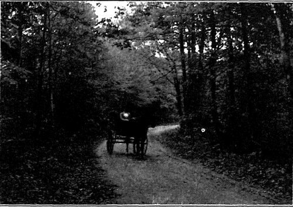
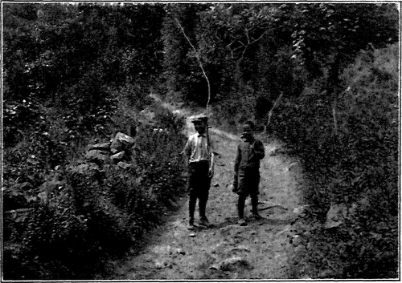

Principles Of Structural Composition
Description
This section is from the book "The Natural Style In Landscape Gardening", by Frank A. Waugh. Also available from Amazon: The Natural Style in Landscape Gardening.
Principles Of Structural Composition
THOSE who have not considered the matter are apt to think that a garden in the natural style has no structure, that it is a merely accidental succession of parts. This notion is wrong, of course. The home garden, public park or forest reserve intelligently designed in the natural style has just as definite and logical a plan as the best geometrical garden. Its structure follows laws just as plain and necessary. There are, to be sure, a great many gardens to be found in an alleged natural style which truly have neither rhyme nor reason. They have no plan nor structure. They were not designed. They just grew, like Topsy. No— that's assigning them too much credit, for a garden which grows up honestly round the family life of owners, or a park that grows up decently in the hands of a devoted superintendent, often shows a genuine form and structure given to it by the natural forces of growth. The mere fact that there are some "natural" gardens without form and void cannot stand against the structural possibilities of this style. There are also a great many geometrical gardens in which the structure is merely fortuitous or wholly inarticulate.
The first structural problem in designing in the natural style comes with the division of the ground into various compartments. If we are dealing with a park of any size, there will be perhaps a piece of woodland here, beyond it an open field to be devoted to golf, on the other side a section for a picnic ground, then a little children's playground, and finally an area for public music and festivity. These divisions will follow the natural features of the topography and the social demands of the situation, but they are to be made with great care. Frederick Law Olmsted used to give particular thought to this part of his study and it is very interesting to go over the plans of Mount Royal Park, Montreal, Franklin Park, Boston, or Jackson Park, Chicago, for examples, to see how these divisions were made and what clever names he invented for them. This naming of the parts, e. g., "The Upper Fells," "The Greeting," "The Wooded Island" is significant, for it indicates that to each of these parts the artist wished to give a character of its own. This little trick was peculiar to Olmsted and has not even been well imitated by anybody since his day.
Even in the small private garden, the same method of subdivision has to be followed to some extent. The massing of wild flowers should be appointed to one section, the open lawn with its croquet ground should have its own allotment, the big shade trees belong in another quarter and the evergreens still elsewhere. It may not be possible to develop these several characters so completely as in the larger spaces of a big park, but the essential structure is there just the same. A coffee mill is not so big as a turbine steamship, but it has its own parts and structure quite as truly.
It is not to be understood that these parts in a natural park or garden are to be separated from each other by distinct lines in any case. If they are set apart by high walls, then we have several gardens instead of one, and each of these gardens has its own organization. The happy blending of these several compartments along their lines of juncture, while preserving their essential character within, is a part of the landscape gardener's art. So far as this art has any technic, it follows the rules discussed elsewhere for the blending of groups in planting.
In very large parks, however, the various sections, or certain of them, may become so large as to require treatment like separate parks. A big state park of fifty square miles, for example, might have a public camp ground along the lake shore, a forest reserve on the mountain sides, and a fair grounds at one corner. These three enterprises would present practically three problems and would call for three park designs. Every work of art must fall into commensurable limits, that is within such range that one man at one time and place can comprehend and enjoy the whole. When it requires three days to perform one musical composition it ceases to be a work of art and becomes a general exhibition.
We have in hand now our tract of land with all its natural features, we understand all the requirements of our problem, we have determined on the plan of subdivision, and we are ready to attack the design. We may suppose also that we have adopted a theme or leading motive, such as has been discussed in Chapter IV. The next problem in structural technic is to effect an entrance.
The main entrance to a park or garden is frequently fixed by the conditions of the problem. In such cases it is usually possible to accept the situation without discussion, though occasionally a proposed entrance is so unfortunate as to justify heroic efforts for its displacement. If the designer has some freedom of choice he will give this question very special attention, for a good introduction is half the story. The orator spares no pains with his exordium to ingratiate himself with his audience. The composer of music arranged a carefully studied introduction for every set piece. The architect always wishes to have the portal and entrance hall of every building as attractive as possible.
NEW ENGLAND COUNTRY ROAD.
GOING FISHING. THE COUNTRY ROAD.
Photographs by the Author.
In general, the entrance to the park will be at some distance from the culminating feature, if not indeed at the farthest remove from it. If contrariwise, one should make his entrance directly upon the main show, or immediately facing the grand view, the rest of the visit to the park might better be abandoned, for it will be a depressing down grade run to an anticlimax. For this reason it is quite possible, in the anxiety to make a good first impression, to overdo the treatment of the park entrance. I could name more than one park in America in which one sees nothing further to compare with the blaze of ornament which greets him at the front gate*
Continue to: